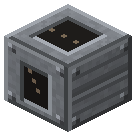

Загрузочный бункер скипа
Эпоха 2Пар и механика

стоит

в работе
На дне ствола, строго под лебёдкой.
На дне ствола, строго под лебёдкой. Принимает всё: воронки, люки экскаватора, руками.
Параметры
| Эпоха | 2 — Пар и механика |
|---|---|
| Многоблок | нет |
| Привод | топка / своё |
| что делает | приём груза на дне ствола |
| из чего | воронка, железные листы |
Кого кормит
- машины Zavod её продукт не едят
Как устроено (из кода)
Загрузочный бункер скипового подъёма: стоит на дне ствола, под лебёдкой (TileSkipWinch). Принимает всё (воронки, люки экскаватора, трубы, руками); лебёдка сама забирает пачками в скип. В режиме спуска (лебёдка наверху переключена) - сам раскладывает спущенный груз в сундуки и машины вокруг себя (по бокам и снизу).
Сборка — на странице Скиповая лебёдка.